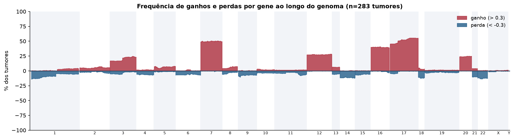
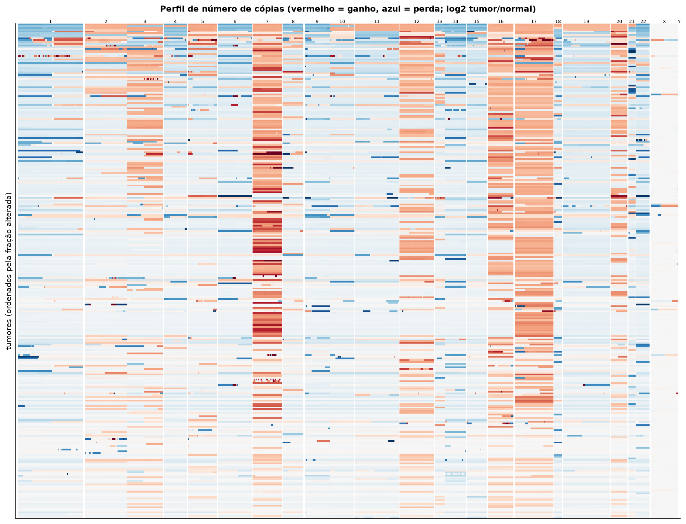
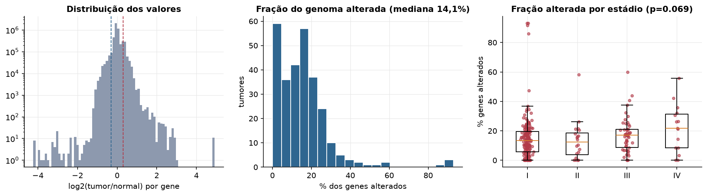
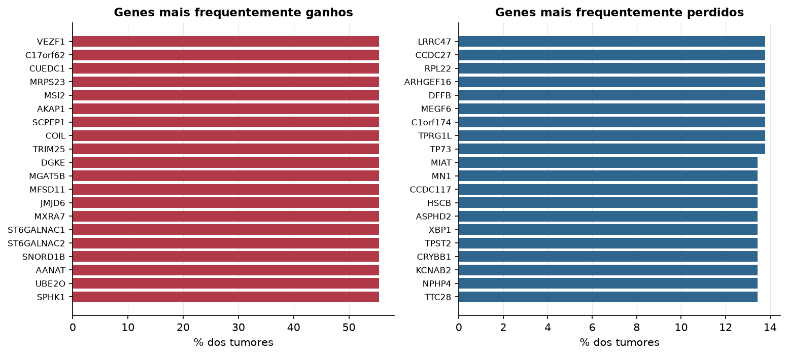

KIRP · Número de cópias (CNV)
Affymetrix SNP6, segmentos whitelisted do PanCanAtlas · gerado em 21/10/2026 23:07
283tumores
17.738genes
14,1%fração alterada mediana
67segmentos/tumor (mediana)
Fonte: SNP6 whitelisted (PanCanAtlas); nível de gene calculado dos segmentos (hg19)
O valor por gene é o do segmento que cobre o meio do gene (log2 tumor/normal, hg19). Sem correção de pureza e ploidia: tumores com pouca célula tumoral têm valores atenuados. Para chamadas discretas (−2 a 2), use o GISTIC2 do PanCanAtlas ou o ABSOLUTE.
Principais resultados
- Mediana de 14,1% dos genes com ganho ou perda por tumor (limiares log2 de 0.3 e -0.3).
- O cromossomo com mais ganhos em média é o 17 (50,9% dos tumores por gene) e o com mais perdas é o 18 (11,2%).
- Genes mais ganhos: VEZF1 (55%), C17orf62 (55%), CUEDC1 (55%), MRPS23 (55%), MSI2 (55%), AKAP1 (55%). Genes mais perdidos: LRRC47 (14%), CCDC27 (14%), RPL22 (14%), ARHGEF16 (14%), DFFB (14%), MEGF6 (14%).
- Fração alterada por estádio: Kruskal-Wallis p=0.069.
Paisagem ao longo do genoma


Carga de alterações

Genes recorrentes

Top 25 genes por frequência de ganho
| gene | chrom | % ganho | % perda | média log2 |
|---|---|---|---|---|
| VEZF1 | 17 | 55.5 | 0.4 | 0.269 |
| C17orf62 | 17 | 55.5 | 0.4 | 0.274 |
| CUEDC1 | 17 | 55.5 | 0.4 | 0.269 |
| MRPS23 | 17 | 55.5 | 0.4 | 0.269 |
| MSI2 | 17 | 55.5 | 0.4 | 0.269 |
| AKAP1 | 17 | 55.5 | 0.4 | 0.269 |
| SCPEP1 | 17 | 55.5 | 0.4 | 0.269 |
| COIL | 17 | 55.5 | 0.4 | 0.269 |
| TRIM25 | 17 | 55.5 | 0.4 | 0.269 |
| DGKE | 17 | 55.5 | 0.4 | 0.269 |
| MGAT5B | 17 | 55.5 | 0.4 | 0.27 |
| MFSD11 | 17 | 55.5 | 0.4 | 0.27 |
| JMJD6 | 17 | 55.5 | 0.4 | 0.27 |
| MXRA7 | 17 | 55.5 | 0.4 | 0.27 |
| ST6GALNAC1 | 17 | 55.5 | 0.4 | 0.27 |
| ST6GALNAC2 | 17 | 55.5 | 0.4 | 0.27 |
| SNORD1B | 17 | 55.5 | 0.4 | 0.27 |
| AANAT | 17 | 55.5 | 0.4 | 0.27 |
| UBE2O | 17 | 55.5 | 0.4 | 0.27 |
| SPHK1 | 17 | 55.5 | 0.4 | 0.27 |
| PRPSAP1 | 17 | 55.5 | 0.4 | 0.27 |
| QRICH2 | 17 | 55.5 | 0.4 | 0.27 |
| RNF157 | 17 | 55.5 | 0.4 | 0.27 |
| FOXJ1 | 17 | 55.5 | 0.4 | 0.27 |
| EXOC7 | 17 | 55.5 | 0.4 | 0.27 |
Top 25 genes por frequência de perda
| gene | chrom | % ganho | % perda | média log2 |
|---|---|---|---|---|
| LRRC47 | 1 | 0.4 | 13.8 | -0.136 |
| CCDC27 | 1 | 0.4 | 13.8 | -0.136 |
| RPL22 | 1 | 0.4 | 13.8 | -0.136 |
| ARHGEF16 | 1 | 0.4 | 13.8 | -0.136 |
| DFFB | 1 | 0.4 | 13.8 | -0.136 |
| MEGF6 | 1 | 0.4 | 13.8 | -0.136 |
| C1orf174 | 1 | 0.4 | 13.8 | -0.136 |
| TPRG1L | 1 | 0.4 | 13.8 | -0.136 |
| TP73 | 1 | 0.4 | 13.8 | -0.136 |
| MIAT | 22 | 0.7 | 13.4 | -0.14 |
| MN1 | 22 | 0.7 | 13.4 | -0.14 |
| CCDC117 | 22 | 0.7 | 13.4 | -0.14 |
| HSCB | 22 | 0.7 | 13.4 | -0.14 |
| ASPHD2 | 22 | 0.7 | 13.4 | -0.14 |
| XBP1 | 22 | 0.7 | 13.4 | -0.14 |
| TPST2 | 22 | 0.7 | 13.4 | -0.14 |
| CRYBB1 | 22 | 0.7 | 13.4 | -0.14 |
| KCNAB2 | 1 | 0.4 | 13.4 | -0.133 |
| NPHP4 | 1 | 0.4 | 13.4 | -0.133 |
| TTC28 | 22 | 0.7 | 13.4 | -0.14 |
| CHEK2 | 22 | 0.7 | 13.4 | -0.14 |
| AJAP1 | 1 | 0.4 | 13.4 | -0.133 |
| RNF207 | 1 | 0.4 | 13.4 | -0.133 |
| RFPL1 | 22 | 0.7 | 13.4 | -0.14 |
| AP1B1 | 22 | 0.7 | 13.4 | -0.14 |